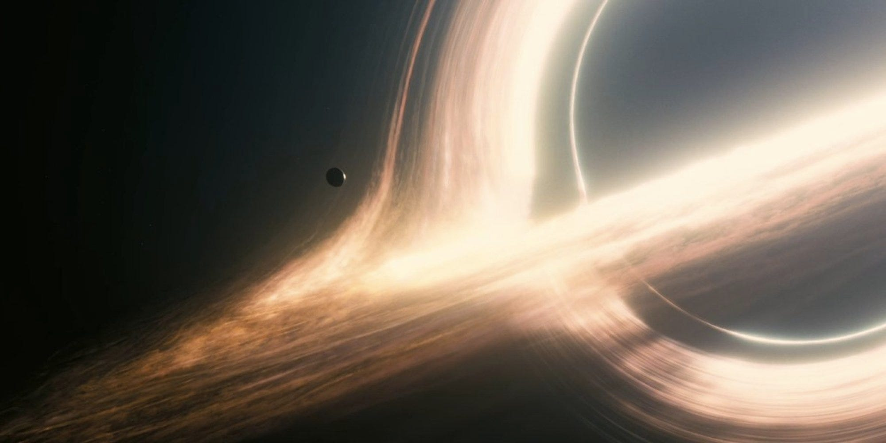
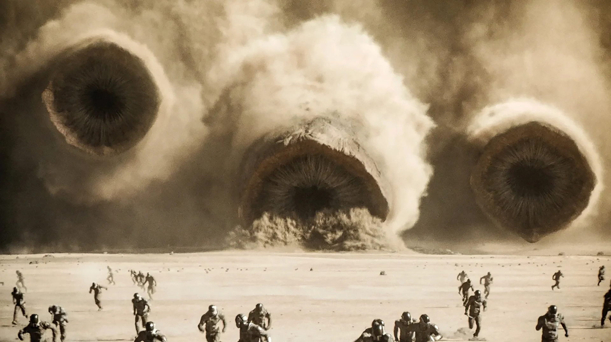

Em Homem-Aranha 3 (2007), dirigido por Sam Raimi, a
computação gráfica atinge um patamar em que deixa de atuar
primariamente como suporte complementar para assumir o protagonismo
narrativo e estético da obra. As sequências de ação vertiginosas, os
deslocamentos acrobáticos do protagonista pelas malhas urbanas de Nova
York e, sobretudo, a materialização do Homem-Areia exigiram o
desenvolvimento sofisticado de simulações físicas de partículas e
texturas materiais.
A evolução dos modelos tridimensionais poligonais, dos algoritmos de
iluminação global e das ferramentas de simulação de fluidos e massa
permitiu a representação visual de fenômenos dinâmicos complexos e
inalcançáveis por meios puramente mecânicos. O CGI passou a estruturar
a própria narrativa, criando personagens dotados de maleabilidade
física extrema e ambientes dinâmicos que respondem em tempo real às
ações dramáticas.
A tecnologia digital converteu-se, portanto, em linguagem, gerando um
universo diegético onde a encenação e a computação tornam-se
indissociáveis.

Cena do filme Interstellar
Interstellar — Realismo Digital e Precisão Científica
A relação entre efeitos visuais, rigor científico e realismo
fotográfico encontrou em Interstellar (2014), de Christopher
Nolan, um ápice conceitual. A representação visual do buraco negro
Gargântua e dos discos de acréscimo associados não buscou apenas o
deslumbramento fantástico, mas fundamentou-se em equações astrofísicas
reais fornecidas pelo físico Kip Thorne. Para tanto, o software de
renderização foi desenvolvido do zero para simular com precisão a
forma como a gravidade desvia e distorce a luz.
Essa abordagem demonstra que a computação gráfica contemporânea possui
a capacidade de atuar como instrumento de visualização científica e
expansão cognitiva. Paralelamente, o filme reafirmou a centralidade
dos elementos práticos — como a construção de maquetes gigantescas e o
uso de projeções práticas no set no lugar de telas verdes genéricas —,
visando garantir a verossimilhança da interação luminescente entre
atores e ambientes.
O objetivo primordial consolidou-se na busca por uma transparência
estética: o efeito visual moderno atua para que o espectador abdique
da percepção do artifício, fundindo a manipulação digital à textura
orgânica da película de 35mm e IMAX.

Cena do Filme Duna
Duna — A Fusão entre o Físico e o Digital
O estágio contemporâneo dessa trajetória dialética encontra em
Duna (2021), dirigido por Denis Villeneuve, uma síntese
exemplar da fusão inseparável entre o físico e o digital. A produção
rejeitou a dependência exclusiva de palcos de LED ou fundos verdes
uniformes, priorizando locações reais em desertos inóspitos, cenários
físicos monumentais, figurinos táteis e veículos construídos em escala
real. Sobre essa base material densa, a postvisão digital inseriu
naves colossais, tormentas de areia simuladas por computador,
criaturas titânicas como os vermes da areia (Shai-Hulud) e
extensões digitais de horizontes.
A representação da areia e dos ambientes desérticos evidencia o modo
como tecnologias físicas (texturas minerais reais, vento controlado e
iluminação natural) operam em concerto simbiótico com simulações de
partículas e modelagens tridimensionais avançadas.
O cinema contemporâneo demonstra, por meio de produções dessa
envergadura, que a oposição dicotômica entre "efeito prático" e "CGI"
tornou-se obsoleta. As produções modernas operam por meio de uma
ecologia técnica integrada, selecionando e combinando recursivamente o
meio físico e o digital em função das demandas específicas de cada
plano cinematográfico.